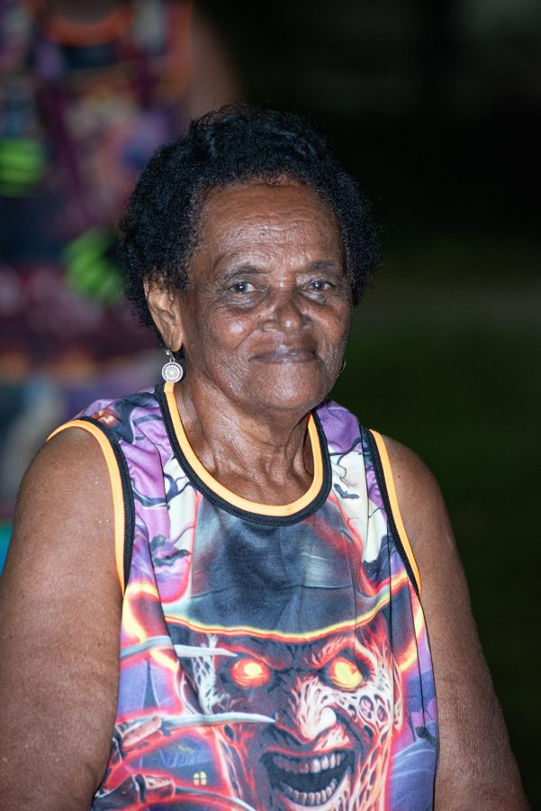

Há mais de 23 anos, sua casa é o ateliê onde as fantasias da Nova Geração ganham vida.
Mãe de um dos responsáveis e avó de outro, Dona Rosa é a grande matriarca da Turma Nova Geração. Há mais de 23 anos, sua casa é o ateliê onde as fantasias são cortadas, bordadas e montadas artesanalmente pela família e pela comunidade — o verdadeiro coração pulsante por trás de cada carnaval do grupo.
Mais do que um espaço de costura, a casa de Dona Rosa é onde gerações se encontram: netos, filhos e afilhados se reúnem ano após ano para dar vida às fantasias que depois tomam as ruas de Campo Grande. É ali que a tradição é transmitida de mão em mão, ponto por ponto.
Em reconhecimento a tudo que representa, a Nova Geração dedicou o tema oficial do carnaval de 2023 à sua matriarca: "DNA Rosa". As fantasias daquele ano foram confeccionadas em sua própria residência histórica, fechando o ciclo entre quem cria e quem é homenageada.
Esta página vai ganhar a biografia completa de Dona Rosa — sua trajetória, memórias de família e o papel de cada década na formação do ateliê que sustenta a Nova Geração até hoje. Em breve, mais fotos, depoimentos da família e a história contada por quem viveu cada ponto e cada linha.